一、 环境准备
1. git
\(\text{link:}\)
1 | https://git-scm.com/ |
2. node
\(\text{link: }\)
1 | https://nodejs.org/en/download/ |
安装完成后输入 node -v
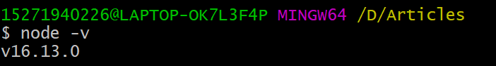
输出版本号就安装完成了。
3. hexo
npm install hexo -g
安装完成后输入 hexo -v
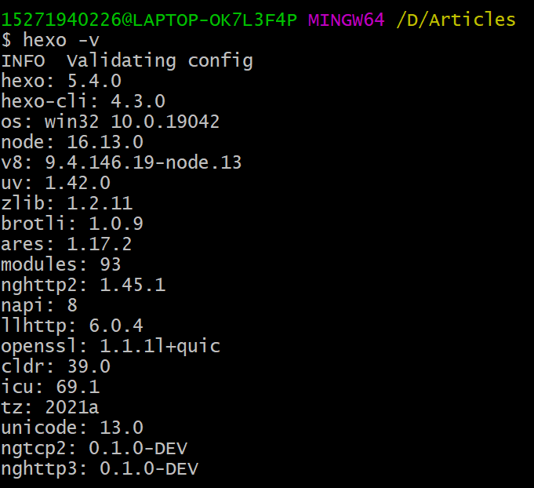
输出 hexo 以及 hexo 的部分依赖的版本号即安装完成。
安装 hexo 依赖：
npm install --save hexo-deployer-git
二、 配置 ssh-key （可选）
1. 配置 ssh
1 | ssh-keygen -t rsa -C <your-email-address> |
2. 添加 ssh-key
在 github 主页，在左侧的 SSH and GPG keys 中，新建 SSH-key，自定义一个标题，将 id_rsa.pub 复制的内容粘贴到 key 中即可。
3. 配置账号和密码
1 | git config --global user.name <your-user-name> |
三、 搭建博客
1. 在 github 新建仓库
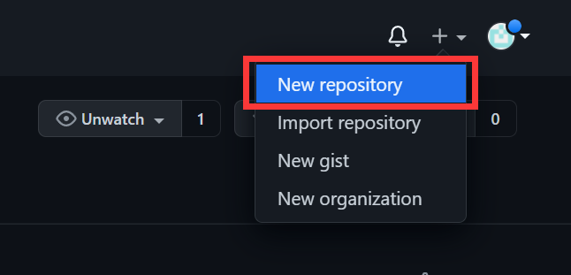
仓库名称格式： 用户名.github.io
例如我的用户名是 Ranbo0，那么我的仓库名就要设置成 Ranbo0.github.io
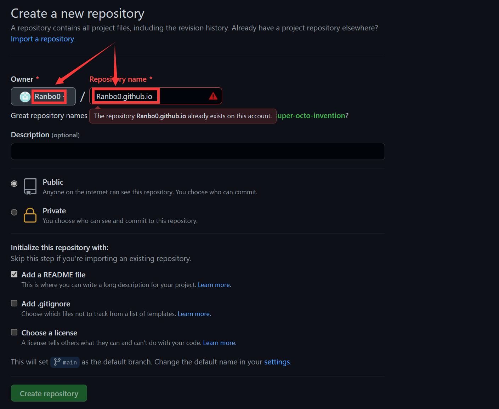
因为我已经创建过了，所以这里显示已存在。
2. 修改配置文件
在 hexo 根目录下有个配置文件 _config.yml ，修改其中的 deploy ，表示每次更新博客时上传的仓库。
1 | deploy: |
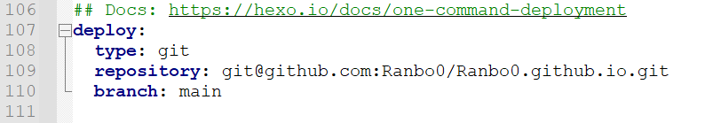
其中 repository 和 branch 根据自己的仓库设置。
3. hexo 基本命令
1 | hexo new "<blog-name>" #新建文章 |
4. 创建第一篇博客
1 | hexo new "my first blog" |
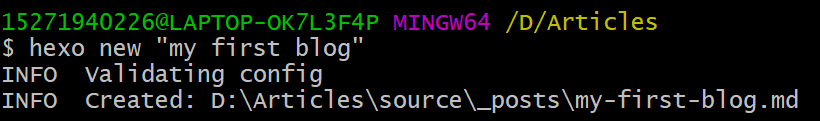
然后会在 source/_posts 下创建一个名为 my-first-blog.md 的文件，修改该文件后即可将文件上传到自己的博客上了。
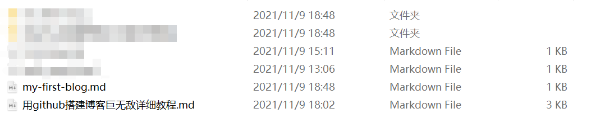
1 | hexo g |
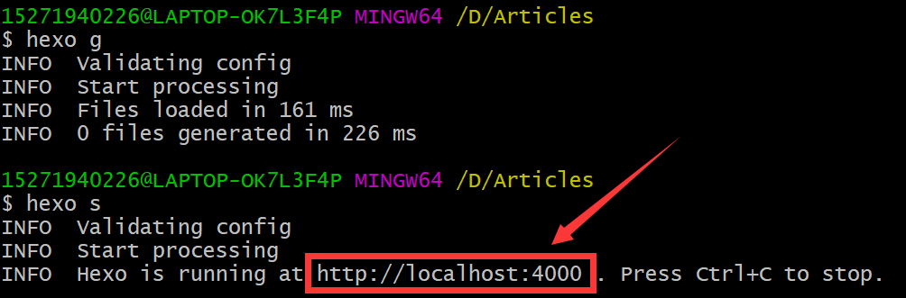
其中的 http://localhost:4000 是预览页面，可以在达到自己的效果之后再提交到 github 上。
1 | hexo d |
每次提交之前可以先 hexo clean ，然后再执行 hexo g 和 hexo d 。
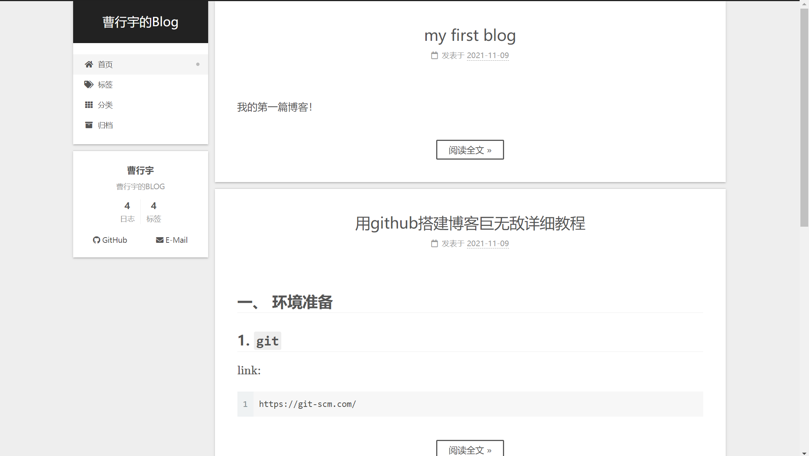
如图所示，即成功上传。
当执行
hexo d时出现ERROR Deployer not found: git的报错信息时，再次安装hexo-deployer-git：1
npm install --save hexo-deployer-git
以上即是搭建自己的博客的教程。
下面介绍如何渲染自己的博客。首先要安装 nexT ：
四、 安装主题
1 | git clone https://github.com/theme-next/hexo-theme-next themes/next |
五、 启用主题及相关配置
1. 启用主题
打开 hexo 的 _config.yml 文件，找到 theme 字段，并将其值更改为 next。
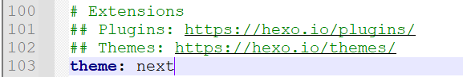
2. 验证主题安装成功
1 | hexo s --debug |
此时即可使用浏览器访问 http://localhost:4000，检查站点是否正确运行。
若此时的界面与未安装 next 时的界面相同，或者全部是纯文本则表示主题安装失败，需要重新安装。
3. 主题设置
Scheme 是 NexT提供的一种特性，借助于 Scheme，NexT为你提供多种不同的外观。同时，几乎所有的配置都可以 在 Scheme之间共用。目前 NexT支持三种 Scheme，分别是：
Muse- 默认Scheme，这是NexT最初的版本，黑白主调，大量留白Mist-Muse的紧凑版本，整洁有序的单栏外观Pisces- 双栏SchemeGemini- 分栏
要修改主题，打开 nexT 中的 _config.yml 文件，找到 Schemes ，将想要设置的主题取消注释即可。
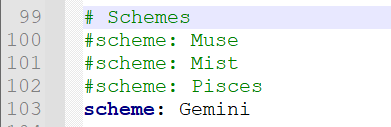
4. 设置语言
打开 hexo 的 _config.yml 文件，找到 language 字段，修改为 zh-CN 即为简体中文， zh-hk 即为繁体中文， en 为英文等。
5. 其他
其他的设置可以根据开始使用 - NexT 使用文档 (iissnan.com) 进行。